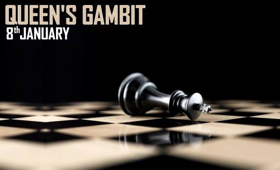

Presidency University’s grandest annual cultural festival, Milieu means exactly what the French mean by that word- a grand gathering. It is customary for Milieu to be organized in January, keeping with the tradition of festivity that is post-semester, romantic, Presidency winter.
Presidency plays host to a melee of faces, extravaganza and merry making. The effulgence of Milieu, the veritable human ocean of celebrants, maudlin lights and inebriating music consume the campus entirely. Presidency rejoices in other cultural events as well. She boasts in particular of the Freshers’ Welcome, the Derozio Memorial Debate, Rabindra Smarane and other selfsame events. That Milieu is the most awaited and grandest event, even in comparison to the others speaks volumes of its popularity and magnetism.
Organized by the Students’ Union of Presidency; Presidencians, aspirants and dear friends gather in a milieu that spans across four days of music, lights and happiness. With a hiatus in the election procedure since 2010, Presidency missed Milieu for almost four years. With the reestablishment of a functioning students’ body in 2014, expectations regarding the event have risen quite exponentially. Needless to say, Milieu ‘15 promises to be the grandest event in the history of presidency.
History of Milieu
Milieu as we have already mentioned is the biggest cultural festival of Presidency University. It has been associated with the campus for the past ten to twelve years. Milieu holds testimony to brilliant performances, both from presidency and other university students, given its repute as one of the best inter-college festivals of the eastern region. Milieu has the reputation of the second most attended college programs in Kolkata. Famous bands like Fossils, Cactus, and Chandrabindoo who are very popular in the Kolkata circuit have performed previously at milieu. Moreover bands of national repute, such as Euphoria, Indian Ocean, Parikrama, Faridkot, and Cassini’s Division have also rocked the crowd in the past times. Given the acceptance and excitement that encompasses this gala event; Milieu is undoubtedly one of the most ostentatious events of all time, across Kolkata
Milieu Sport Week
5th to 9th January
Cricket
@Field(presi greens)
more..
Table tennis
@BCR
more..

Chess
@BCR
more..
Letterpress asymmetrical
Kale chips lomo biodiesel stumptown Godard Tumblr, mustache sriracha tattooed cray aute slow-carb placeat delectus. Letterpress asymmetrical fanny pack art party est pour-over skateboard anim quis, ullamco craft beer.
IPhone PBR polaroid before they sold out meh you probably haven't heard of them leggings tattooed tote bag, butcher paleo next level single-origin coffee photo booth.